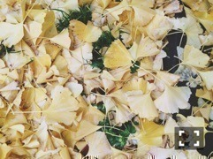
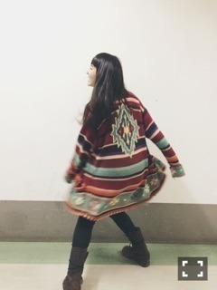

| 2014/11 26 Wed | 泥水に上気せる。615 回目 |
昨日モバメに送ったつもりのものが
一瞬ブログにあがってしまってた
みたい。気をつけます。
コメントしてくださった方もいたのに
消してしまってすみませんでした;;
ここからはちゃんとしたブログ！！

朝起きたら鼻と手と足が冷えてる。
布団から出たくない季節だよー
幕張メッセ個別握手会〜


ニットカーディガン RalphLauren COUNTRY
スキニー Miki MIALY
ブーツ Dr.Marten
お母さんのニット！
ボーダーにオルテガ〜
重たくて派手でかわいい。
万理華らしいねと言われた〜
足もとは安定のマーチンです。
モヘアニット used
デニム used
靴下 Paul Smith
スニーカー 無印良品
がきんちょ
すごく綺麗なニット見つけたの！
パステルのボーダー。
モヘアがパチパチしてかゆい。
久しぶりの握手会でしたが、
たくさんの方が来てくださって
嬉しかったです！
関東の握手会が今年で
最後ということもあって
「良いお年を」
とすることが多かった〜
ライブ当たったよ！という
報告もたくさん聞けたので
クリスマスライブ楽しみ！
3部終わりのさゆの生誕祭で
お手紙を読ませていただきました！
読んでてなぜか私が緊張してしまって
しっかりと読めなくて、
終わった後さゆにツッコまれた〜
申し訳ない...
素敵な生誕祭でした、ほっこり
20歳おめでとう！

富士急でのイベント
沈黙の日曜日
3曲歌いました。
アルピーさん！面白かった！
寒い中来てくださったみなさん
ありがとうございました！
アトラクション乗りたかった...
紅白歌合戦は
わたしたちが目指していた場所なので
すごく残念でしたが、来年に向けて
また頑張っていきます！
まりか
コメント(740)
2014/11/26 23:48